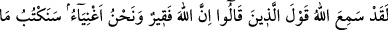
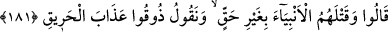

bin kere haccetse, bin kere de savaşa katılsa, malının zekâtını verinceye kadar, bunların
hiçbirinin kendisine bir faydası olmaz.”
Yine Hz. Peygamber buyuruyor: “Her sene temizlenmeyen (zekâtı verilmeyen) mal
hayırdan uzaktır. Her kırk gecede bir sıkıntı ve belâya yakalanmayan beden
bereketten mahrumdur. Sürçme, sıkıntı, hastalık, allerji, gözü seğirmek ve bunlardan
daha büyük şeyler bu sıkıntı ve belâlara dâhildir.”[161]
Tüm bu haberleri duyduğuna göre, inat ederek malı ve şartları müsâid olduğu halde,
fakirleşip ölene kadar kalp duruluğu ve gönül rızâsı ile malının zekâtını vermeyenlerin
ne kadar günahkâr olduklarını kavramışsındır.
Bugün çabucak dağıt hazîneyi fukaraya
Çünkü yarın anahtarı sende olmayacak
Kendi elinle götür, orada kendine lâzım olanları,
Kişiye merhamet etmez karısı ve oğlanları.
Zengin ve cimri adam gümüş ve dinarın,
Tılsımıdır, tılsım gibi oturur üstünde malların.
Böyle adamın altınları bekler senelerce
Altınlar başları üstündeki tılsımdan titrer bir nice
Ansızın, kırıverir tılsımı ecel taşı
Paylaşırlar hazîneyi rahatça kırılınca başı
Çünkü hayatta iken evlâdu ıyâlin vardı.
İncinmeye gerek yok, onlar senin ölmeni istiyorlardı.
Sen malın yararını düşünüp yaşadın gafletle
Ömür sermayeni ayaklar altına attın cehâletle
Gaflet sürmesini sil de gözünü iyi aç,
Yarın toprağın gözüne sürme olacağı âkibetten kaç!
181. “Gerçekten Allah fakir, biz ise zenginiz” diyenlerin sözünü andolsun ki
Allah işitmiştir. Onların (bu) dediklerini, haksız yere peygamberleri öldürmeleri ile
birlikte yazacağız ve diyeceğiz ki: Tadın o yakıcı azabı!
“Allah fakirdir, biz zenginiz” sözünü yahûdîler; “Kim Allah’a, karşılığını kat kat
alacağı güzel bir borç verir?” (el-Bakara, 2/245) âyet-i kerîmesini duyunca
söylemişler.